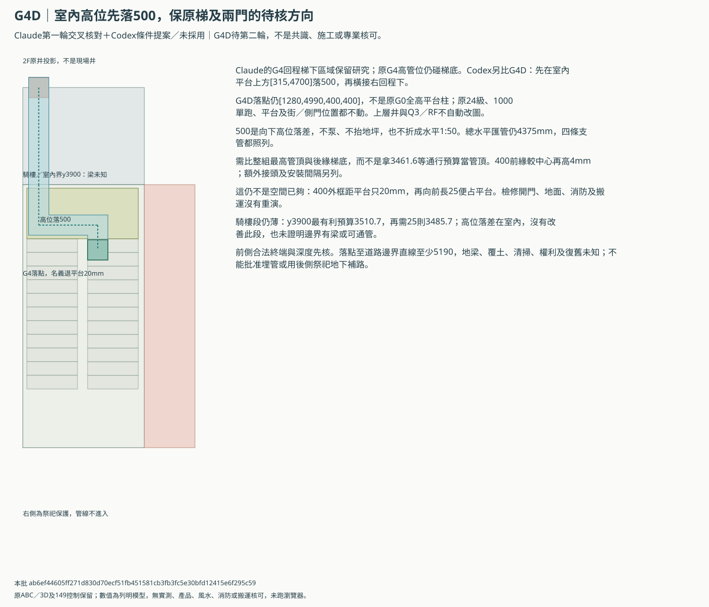
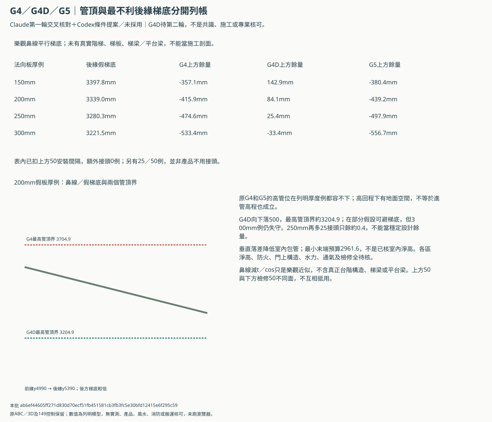
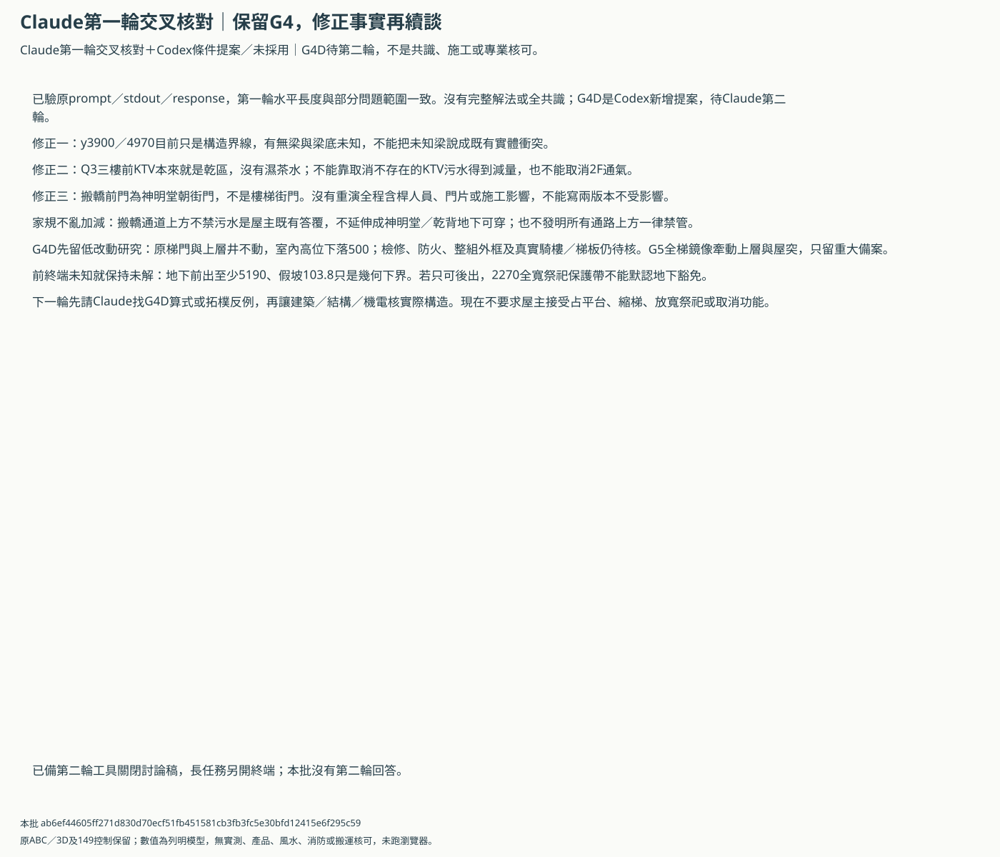

B前排水Claude第一輪：交叉核對與G4D條件提案
第一輪已取得並核來源；部分算式一致，沒有全共識。G4D為Codex新增、待Claude第二輪，未採用或併主3D，非工程／風水核可。
先請Claude第二輪核G4D的500落差與整組管頂／梯底算式，再由建築／機電／結構核合法前終端、騎樓及平台界線、梯板與通氣清掃；G5保重大備案。未有全案可採用解法。
原梯保留的G4D高位落差方向


管頂、最不利後緣梯底及失守案例


哪些同意、哪些修正、哪些仍待核


原案與新條件分開
| 案 | 來源 | 水平匯管mm | 室內下落mm | 改梯 | 施工核可 |
|---|---|---|---|---|---|
| G4 | Claude第一輪 | 4375.0 | 0 | 原梯保留 | 未知 |
| G4D | Codex交叉核算後提案，待Claude第二輪 | 4375.0 | 500 | 原梯保留 | 未知 |
| G5 | Claude第一輪 | 3210.0 | 0 | 須全棟重排 | 未知 |
逐項交叉核對
| ID | Claude論點 | 核對 | 修正及限制 |
|---|---|---|---|
| CC-01 | 原四線與G4／G5延長線算式 | 同口徑複算一致 | 只對P4器具中心假排口及同起算、統一1:50模型成立，不是實際管線。 |
| CC-02 | 騎樓與室內分段檢討 | 方向可保留，適用淨高待核 | 到y3900茶水線4465／假預算3510.7，較全末端不同；3500是比較值，實際各區要求未確認。 |
| CC-03 | y3900、y4970必定有梁 | 缺少真實結構證據 | 目前只知騎樓／室內與平台／梯段界線；有無梁、梁底及可穿越位置均未知，不能描述成已知梁。 |
| CC-04 | 三樓KTV取消污水可減量 | 與現行Q3資料不符 | Q3前KTV只有沙發／桌／螢幕／機櫃，已無濕茶水；前井預留不代表有3F污水接入，不增加不存在的負荷，也不取消2F通氣。 |
| CC-05 | G4在高回程下，地面看似空閒 | 值得補核，原高程不足 | 400外框比平台後緣只退20；還要比較整組管線頂部與最不利後緣梯底，不只比柱中心或踏面頂。 |
| CC-06 | G5鏡像保原階數便可沿用 | 重大改梯方向，未完成設計 | 本輪只鏡像1F踏步投影作反例，2F到達、Q3及RF全部門梯與淨高要重核；不能繼承舊通行或原梯結果。 |
| CC-07 | 污水在一般通路上方需重新決定 | 不新增一律禁止或默認許可 | 屋主先前只明示搬轎通道上方不禁止污水；本提案避祭祀／乾背投影，不延伸成保護區可穿。一般樓梯上方仍核實際設計及家中規矩，不因模型猜測強迫現在選擇。 |
| CC-08 | 前後合法終端及地下通行 | 必要先決條件 | 地下前出路只有幾何下界5190／假坡103.8，接管權利／深度／覆土／地梁未知；後出路不能默認地下可穿祭祀。 |
| CC-09 | 兩種搬轎版不受影響 | 只能說來源格局未改 | 搬轎前門是神明堂朝街門，不是樓梯街門；本輪沒有重演含桿人員、施工期間或全程運動，不把不改圖說成無影響。 |
| CC-10 | 4.4mm的餘量 | 數值換算一致，不能放行 | 同1:50可抵220mm額外水平長，或任一新增厚度5mm即失守；不得據此選薄梁、小管或放平坡。 |
未解的騎樓及地下終端
y3900最有利假預算3510.7、額外25只3485.7；G4D不改善此段。前地下直線至少5190、假坡103.8，不含覆土／地梁／權利及接管深度，後側祭祀保護不默認地下豁免。
使用邊界
- Claude第一輪回應已驗prompt／stdout／response雜湊並保存公開研究副本；結果摘要未標示模型名，不從用量資料推定回答模型。只有數字及問題範圍部分一致，沒有完整解法、全共識或採用。
- G4／G5是Claude提議，G4D是Codex新增條件候選，尚未取得Claude第二輪回應。新管線只是獨立預先規劃，不改原ABC／3D、P4／Q3、兩種搬轎版及149控制。
- 原G0～G3仍不能直接套用，不代表回程梯下也無解；G4柱比平台後緣僅退20mm，超出400外框的包覆／五金增量25會碰平台。400是整組預留，不是實管直徑。
- 梯底只以24級／4m、270踏面之示意鼻線減法向板厚／cos比較，未提供真正梯板、台階構造、梯梁或平台梁；這是列明假設，不是實際可用高度。
- 管線應比管含支撐包絡頂部；原預算式的3504.4等數字包含管包絡與下方檢修，不能拿來當管頂。整組400前緣進管較中心再高4mm，採較高頂包絡核最不利後緣。
- G4原案在150～300梯板例的管頂都高於後緣梯底，不能直接當已能進管。G4D只在室內平台上方新增500垂直落差，不向上泵、不抬地坪也不減梯寬；水力、通氣、清掃與降落處防火／噪音仍未設計。
- 50mm上方安裝間隔與原下方50mm檢修是不同面，不能重複充作同一餘量；另列0／25／50超出原包絡的接頭增量，不當原廠要求已知或真的不用額外接頭。
- 500垂直落差不當水平1:50坡度折算。新室內包管會降低平台上方空間；各區淨高要求未知，沒有把騎樓3500比較值套成全室法規，也不因管頂可避梯底就判通行／消防通過。
- G4D不改善騎樓段：到y3900最有利預算3510.7mm，另需25仍降至3485.7；有無梁與管線是否能穿越此構造界線仍需正式剖面。
- G5需要整棟樓梯／門／屋突重排，本輪只有1F鏡像剖面比較，未重設平台、門片、扶手或上層；70mm側門邊與起跑距離不當已可用。
- 所有新列管線包絡避已列祭祀／乾背與武轎庫投影；這不批准梁位、噪音、濕管穿孔、一般行走線上方家規或地下通行。搬運例外不延伸成神明堂地下可穿。
- 優先條件為合法前側終端與接管深度；5190mm只是落點至道路邊界直線下界。地下覆土、地梁套管、清掃、防水、權利、回填與修復全未知，不批准開挖或排放。
- 若只能後出，y9100～11370全寬保護帶至少2270mm不可默認地下豁免。資料到齊再決定必要取捨，現在不要求屋主放寬家規或取消功能。
- Q3三樓前KTV本來沒有濕茶水，不藉取消不存在的污水取得解方；後公衛／工作天井、RF24㎡、聲學與全棟通氣排水仍未解。
claim-review.csv／pipe-lengths.csv／soffit-cases.csv／chase-growth.csv／arcade-boundary.csv／engineering-replies.csv
本批 ab6ef44605ff271d830d70ecf51fb451581cb3fb3fc5e30bfd12415e6f295c59；第一輪原始回應及來源另存研究副本。未執行第二輪AI、瀏覽器／WebGL或轉圖，沒有實測、專業或施工核可。